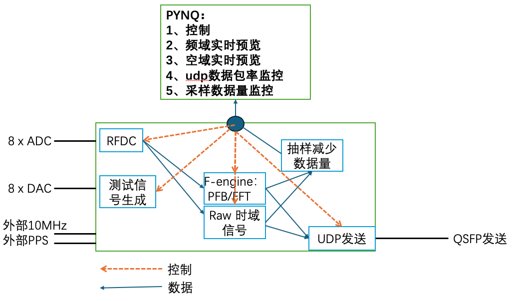

当前状态基线
这份细化设计不从空白开始，而是继承当前 bring-up 结果：单通道 RFDC 链路和 PYNQ debug 已经可用，正式多通道数据面仍在下一阶段。
现有草图保留的核心方向
你的草图已经把系统拆成 RFDC、测试信号生成、Raw 时域信号、F-engine PFB/FFT、采样降速数据量、UDP 发送和 PYNQ 控制/预览几块。新的顶层设计延续这个划分，但补充两类缺口：第一，缺少外部参考或 QSFP 时的状态机；第二，DAC、PYNQ 预览和 UDP header 里的时间标记需要作为正式接口，而不是临时 debug。

这次新增的架构约束
- 无外部同步 仍可采样，PYNQ 显示为 INTERNAL_ONLY，包头 flags 标记非绝对同步。
- 无 QSFP UDP packetizer 仍可产生 frame、seq、byte counter，链路状态显示 LINK_DOWN。
- 8 路 DAC 作为可调测试信号源，支持频率、幅度、相位和 PYNQ phase offset 注入。
- PYNQ 预览 同时提供虚拟示波器和虚拟频谱仪，时域点带 sample index / time tick。
- UDP 时间 包头带 sample counter、frame id、epoch mode 和 PPS counter。
- 采集可调 RFDC 频率访问、DDC/NCO、抽取、PFB 频道数、输出频道窗口和预览长度可配置。
- 缓存分层 高速连续观测走片上 FIFO/packet FIFO；调试预览和触发抓取才写 DDR/BRAM。
新的顶层架构
数据面仍然放在 PL 内高速运行，PYNQ 只做控制、状态和低速预览。关键变化是把“内部同步状态”“未连接输出状态”“测试信号源”和“时间标记”明确成顶层接口。
运行模式与状态策略
新的设计把“能否采样”和“是否全局同步”分离，把“能否生成 UDP 包”和“QSFP 是否连通”分离。这样单板调试不被外部设备卡住，正式观测时又能严格标记同步等级。
| 模式 | 触发条件 | 采样行为 | PYNQ 状态 | UDP flags |
|---|---|---|---|---|
| EXTERNAL_LOCKED | 外部 10 MHz 锁定，PPS 可见，RFDC tile sync 完成 | 下一个 PPS 边沿 arm/start，sample counter 对齐绝对秒 | sync_source=external | REF_LOCK=1, PPS_LOCK=1, TIME_VALID=1 |
| INTERNAL_ONLY | 无外部 10 MHz 或 PPS，但本板 TCXO/内部参考有效 | 允许采样和预览，sample counter 从软件 arm 时刻或内部 epoch 递增 | sync_source=internal_only | REF_LOCK=0, PPS_LOCK=0, TIME_VALID=0, INTERNAL_EPOCH=1 |
| SYNC_LOST | streaming 中外部参考丢失或 PPS 异常 | 可配置为继续采样但标记 invalid，或停止正式 SPEC 输出 | sync_state=lost | SYNC_LOST=1 |
| 链路状态 | UDP packetizer | CMAC/QSFP | PYNQ 应显示 | 用途 |
|---|---|---|---|---|
| LINK_UP | 正常产生 frame 并送入 CMAC | 真实发送 Ethernet/UDP | qsfp_link=up, tx_active=1 | 正式联调和观测 |
| LINK_DOWN_DRY_RUN | 仍产生 header、seq、sample0、frame_id 和 payload counter | TX 被导入内部 sink，不因 link down 反压主链路 | qsfp_link=down, udp_generated=1, udp_sent=0 | 无 QSFP 时验证 UDP 逻辑、计数器和 PYNQ 状态 |
| TX_BACKPRESSURE | 如果内部 FIFO 接近满，优先保护 SPEC 或停止输出 | 标记 overflow/drop | tx_error=1 | 定位链路或仲裁器问题 |
| 输出模式 | 数据路径 | 目标 | 说明 |
|---|---|---|---|
| PREVIEW | ADC/RFDC 或 PFB 输出到 BRAM/DDR | PYNQ | 虚拟示波器、频谱仪、功率和 clip 监控。 |
| SPEC_UDP | ADC → PFB/FFT → channel window → UDP | 未来 X-engine | 用于干涉的正式 F-engine 数据。 |
| TIME_UDP | ADC → decimation/requant → UDP | 其他计算 | 保留时域能力，用于瞬变、RFI、beamforming 或记录。 |
| DUAL | SPEC + TIME 同时输出 | 调试或特殊观测 | 需要速率仲裁和优先级，默认保护 SPEC。 |
8 路 DAC 测试信号源
DAC 不再只是 ADC0-DAC0 闭环临时路径，而是成为系统级自检源。每一路 DAC 都可由 PYNQ 配置频率、幅度、初相和相位偏移，用于检查 RFDC、PFB channel、相位一致性和 UDP 时间标记。
建议寄存器
| DAC_ENABLE_MASK | 8 bit，每一路独立使能。 |
| DAC_FREQ_WORD[i] | 每路 NCO 频率字。 |
| DAC_AMP[i] | 幅度，建议带饱和保护。 |
| DAC_PHASE0[i] | 初始相位。 |
| DAC_PHASE_INJECT[i] | PYNQ 注入相位，用于人为制造相位差。 |
| DAC_MODE[i] | single tone、multi-tone、chirp、PRBS。 |
PYNQ 多路虚拟示波器与频谱仪
PYNQ 预览不是高速数据面，而是“抽样观测窗口”。它需要同时显示多路 ADC/DAC 闭环结果：时域用多条 trace 直接看相位错开，频域用多路 peak、power 和相位标记检查每一路是否落在同一频点并保持预期相位关系。
虚拟示波器：多路相位叠加
虚拟频谱仪：多路峰值与相位
时域预览数据结构
preview_time {
sync_mode = EXTERNAL_LOCKED | INTERNAL_ONLY
sample_rate_hz = current RFDC output rate
sample0 = absolute or internal sample counter
nsamp = 1024 / 4096 / configurable
ninput = 1..8
input_mask = selected ADC lanes
phase_ref = reference input, usually ADC0
iq[input][n] = complex int16 or real debug lane
phase_deg[input] = measured or requested phase
}
频谱预览数据结构
preview_spectrum {
source = debug_fft | pfb_output
nfft = 1024 now, 4096 target
bin0_hz = frequency origin
bin_width_hz = sample_rate_hz / nfft
ninput = 1..8
peak_bin[input] = hardware or software detected
peak_power[input] = accumulated or instant
phase_deg[input] = phase at selected peak bin
power[input][bin] = multi-channel spectrum
}
多路显示的工程要求
| preview_input_mask | PYNQ 可以选择 ADC0..ADC7 的任意组合，默认显示 4 路，最多显示 8 路。 |
| shared_sample0 | 同一次 capture 的所有通道必须共享同一个 sample0，否则不能用来判断相位。 |
| phase_ref_input | 默认 ADC0 作为相位参考，显示每一路相对 ADC0 的 delta_phase。 |
| peak_phase[input] | 频谱仪不仅显示 peak bin/power，还要显示该 bin 上的复数相位，方便验证 DAC phase inject。 |
缓存与发包策略
8 路、约 100 MHz 带宽时，要把“连续高速数据流缓存”和“PYNQ 调试缓存”分开设计。DDR 适合 snapshot 和触发抓取，不适合作为默认连续 UDP streaming 的必经路径；但 packetizer 前必须有片上 packet FIFO，用来凑够接近 jumbo MTU 的 payload。
高速连续观测路径
这条路径应保持 AXI-Stream 化，使用片上 FIFO 吸收短时速率抖动。它不依赖 DDR，因此延迟低、结构清晰，也更容易保证 PFB/FFT 和 UDP 的持续吞吐。
调试预览路径
这条路径服务于 PYNQ 虚拟示波器、频谱仪、预触发/后触发抓取和离线调试。它可以使用 BRAM 做短窗口，也可以使用 DDR 做更长 snapshot，但不应反压主高速数据流。
为什么默认不走 DDR
- 8 路 complex int16、100 MSps 时，原始时域 payload 约为 25.6 Gbps。
- DDR 路径会引入写读仲裁、地址管理、突发读写和更复杂的 backpressure 策略。
- 连续观测中，如果网络或 CMAC 长时间跟不上，DDR 只能延迟失败，不能从根本上消除吞吐不匹配。
不走 DDR 的限制
- 无法保存长时间原始波形，只能保留片上 FIFO 深度内的数据。
- 后端或链路持续反压时，必须 drop、标记 invalid，或停止 streaming。
- PYNQ 不能慢慢读取全速数据，只能读取 snapshot 或降速预览。
packet FIFO 的作用
- 把连续 sample 聚合成接近 MTU 的 UDP payload。
- 降低 packets per second，减轻 FPGA packetizer 和后端收包压力。
- 只需要几个 jumbo packet 深度，通常用 BRAM/URAM，不需要 DDR。
推荐 TIME UDP payload
complex int16: 8 inputs x 4 byte/sample = 32 byte/time 8192 byte payload: 8192 / 32 = 256 time samples packet rate: 100e6 / 256 = 390625 packets/s
推荐 SPEC UDP payload
complex int16: 4 time frames x 64 channels x 8 inputs x 4 byte = 8192 byte payload layout: payload[time][channel][input][I/Q]
UDP 包必须带时间语义
这里的“时间”不一定总是 UTC。外部 PPS/10 MHz 存在时，它是可跨板对齐的绝对采样时间；无外部同步时，它是本板内部 epoch 和 sample counter。两种情况必须在 header 中明确区分。
建议 header
struct T510UdpHeader {
uint32 magic; // "T510"
uint16 version;
uint16 header_bytes;
uint16 board_id;
uint16 stream_type; // SPEC, TIME, PREVIEW, MONITOR
uint16 epoch_mode; // EXTERNAL_PPS or INTERNAL_ONLY
uint16 flags;
uint64 unix_sec; // valid only when TIME_VALID=1
uint64 pps_count;
uint64 sample0; // first ADC sample in payload
uint64 frame_id; // PFB frame or time block
uint32 seq_no;
uint32 chan0;
uint16 chan_count;
uint16 time_count;
uint16 ninput;
uint16 payload_format; // ci16, ci8+scale
};
flags 语义
| TIME_VALID | 外部参考和 PPS 有效，sample0 可跨板比较。 |
| INTERNAL_EPOCH | 无外部同步，sample0 只表示本板内部时间。 |
| QSFP_LINK_UP | 真实 CMAC link up。 |
| UDP_DRY_RUN | packetizer 正在产生包，但未真实发送。 |
| ADC_CLIP | 当前 payload 覆盖区间内出现 clipping。 |
| FIFO_OVERFLOW | 数据面出现 overflow，本包或本段观测不可直接用于科学数据。 |
采集链路可调参数
“频率访问”和“通道化频点个数”需要从一开始就进入寄存器和 PYNQ API。即使第一版只固定 1024 debug FFT，也要把正式 4096 PFB/FFT 的控制面预留出来。
| 层级 | 参数 | 第一版建议 | PYNQ API |
|---|---|---|---|
| RFDC | ADC tile/block enable、NCO center、mixer、decimation、输出 sample rate | 先支持 ADC0，接口按 8 路设计 | configure_rfdc(fs, center_hz, decimation, active_mask) |
| DAC | tone freq、amp、phase、phase inject、mode | 8 路 single-tone + phase inject | set_dac_tone(ch, freq_hz, amp, phase_deg) |
| Preview | input select、nsamp、trigger、source、nfft | 多路 1024 点时域 + 1024 FFT power，snapshot 可写 BRAM/DDR | capture_preview(input_id, nsamp, source) |
| Buffering | packet payload bytes、packet FIFO depth、snapshot buffer mode | 连续流用片上 packet FIFO；调试抓取用 BRAM/DDR | configure_buffers(payload_bytes=8192, snapshot="bram_or_ddr") |
| PFB/FFT | nchan、taps、FFT shift、window、chan range | 目标 4096 channel，4 taps 起步 | configure_channelizer(nchan, taps, chan0, chan_count) |
| UDP | stream type、payload shape、destination、dry-run enable | 无 QSFP 时默认 dry-run，不报 fatal | configure_udp(stream, dst, dry_run_auto=True) |
寄存器与 PYNQ 契约
下面是建议从当前寄存器扩展出来的顶层 contract。名字可以和实际 RTL 保持一致微调，但语义建议固定，方便 notebook、自动测试和后端 packet checker 共用。
控制寄存器
| CTRL_MODE | PREVIEW / SPEC_UDP / TIME_UDP / DUAL |
| SYNC_MODE | AUTO / REQUIRE_EXTERNAL / ALLOW_INTERNAL |
| ACTIVE_ADC_MASK | 8 路 ADC 使能，当前可继续支持 ADC0-only lab。 |
| UDP_DRY_RUN_EN | 无 QSFP 时 packetizer 走内部 sink。 |
| PACKET_PAYLOAD_BYTES | 推荐 8192 byte，接近 jumbo MTU 并降低包率。 |
| SNAPSHOT_BUFFER_MODE | BRAM / DDR / DISABLE，只用于预览和触发抓取。 |
| PREVIEW_TRIGGER | arm、single shot、continuous、trigger source。 |
状态寄存器
| CLOCK_STATUS | external ref、PPS seen、internal clock、RFDC lock。 |
| SYNC_STATUS | external locked、internal only、sync lost、last PPS sample。 |
| QSFP_STATUS | CMAC reset done、link up、tx local fault、dry-run active。 |
| UDP_GEN_COUNT | packetizer 已产生包数，link down 时仍增长。 |
| UDP_SENT_COUNT | 真实送入 CMAC 的包数，link down 时不增长。 |
| PACKET_FIFO_LEVEL | packet FIFO 当前水位，用于判断短时 backpressure。 |
| SNAPSHOT_WRITE_COUNT | 写入 BRAM/DDR 的 preview sample 数，不代表主高速流。 |
实现路线
路线按“先闭环、再全速、再多板”的顺序推进。每一步都能在没有 DGX Spark 收包端的情况下验证一部分设计。
巩固当前单通道闭环
保持 ADC0/DAC0、free-run、PYNQ 1024 点时域/FFT 预览可用。先把 DEBUG_STATUS 的 error 位语义清理成 fatal-only。
扩展 8 路 DAC/ADC 控制面
完成 8 路 DAC tone table、phase inject、8 路 ADC active mask 和 per-input RMS/clip 计数。即使物理只接一路，也能在 PYNQ 中看到完整接口。
实现无 QSFP dry-run UDP
packetizer 产生完整 header、payload counter、seq_no、frame_id。QSFP 未连接时不 fatal，PYNQ 显示 udp_generated 增长、udp_sent 不增长。
把 preview 从 debug 功能升级为正式接口
加入 sample0、sample_rate、sync_mode、input_mask、trigger_id 和 snapshot buffer mode。PYNQ notebook 用同一套 metadata 绘制多路示波器和多路频谱仪。
实现片上 packet FIFO 和 jumbo payload 聚合
连续高速流不默认写 DDR，而是在 packetizer 前凑够接近 8192 byte 的 payload。PYNQ 需要能看到 packet FIFO 水位、payload size 和 dry-run 计数。
接入正式 PFB/FFT 和可调 channel window
从 1024 debug FFT 过渡到 4096-channel PFB/FFT。支持配置 nchan、chan0、chan_count 和输出模式。
QSFP link-up 后再做真实 UDP 发送
本设计暂不涉及 DGX Spark 端采集，只要求 T510 侧能够在 link up 时把 dry-run packetizer 无缝切到 CMAC TX，并保留同样的 header contract。
最终建议
当前实验室默认：ALLOW_INTERNAL + LINK_DOWN_DRY_RUN + PREVIEW。这样没有外部参考、没有 QSFP 时也能采样、看波形、看频谱、验证 DAC 相位注入和 UDP header 计数。
正式观测默认：REQUIRE_EXTERNAL + LINK_UP + SPEC_UDP。这样只有 10 MHz/PPS 锁定且 QSFP 真实连通时，才输出可跨板对齐的 F-engine 数据。